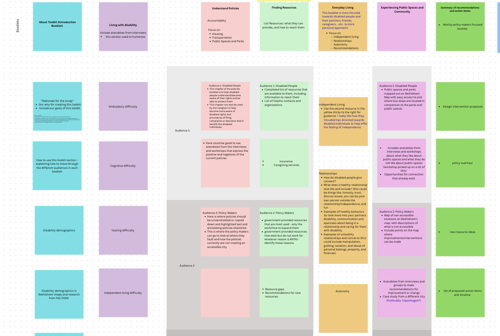
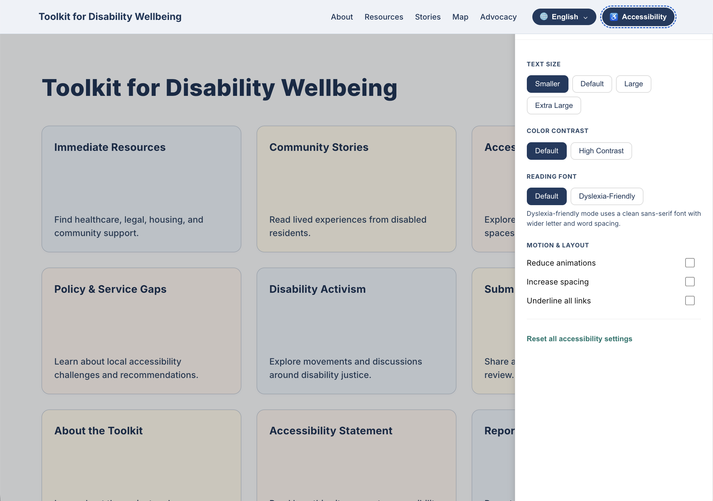
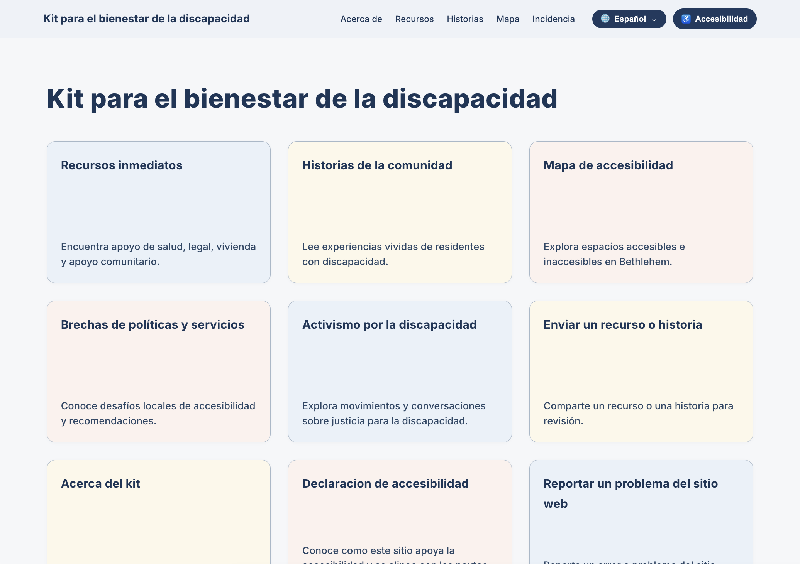
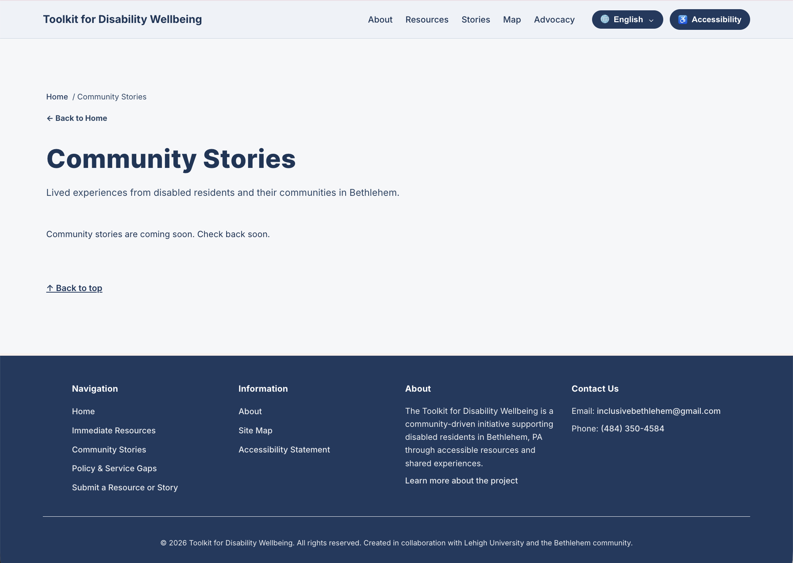
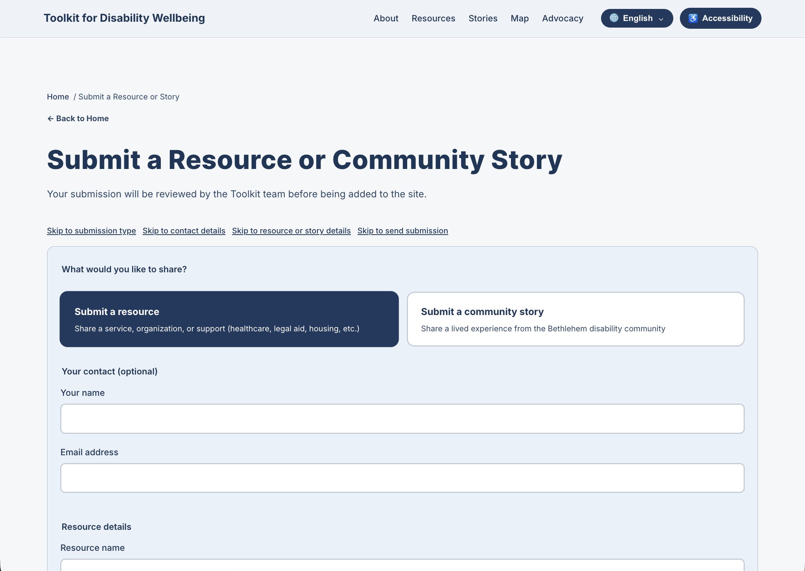

CASE STUDY — SENIOR CAPSTONE
A digital platform pairing an existing physical resource toolkit to help disabled residents of Bethlehem, PA find resources, report barriers, and connect with their community — all in one place.
FULL-STACK DEVELOPER
JAN 2026 - PRESENT
PROFESSOR JENNY KOWALSKI OF LEHIGH'S DESIGN DEPARTMENT HAS SPENT YEARS IN CONVERSATION WITH DISABLED RESIDENTS OF BETHLEHEM, PA — UNDERSTANDING WHAT IT'S LIKE TO NAVIGATE DAILY LIFE WITH A DISABILITY IN THE CITY. HER WORK PRODUCED A SERIES OF PHYSICAL TOOLKIT BOOKLETS. SHE CAME TO US TO BRING THOSE RESOURCES ONLINE: A DIGITAL COMPANION THAT WOULD REACH PEOPLE WHERE THEY ALREADY ARE AND MAKE THOSE RESOURCES ACTUALLY FINDABLE.
"RESIDENTS WERE SPENDING TOO MUCH TIME HUNTING FOR SCATTERED RESOURCES, HAD NO WAY TO REPORT INACCESSIBLE BARRIERS, AND NOWHERE TO HEAR FROM OTHERS IN THE SAME SITUATION."
MAKE RESOURCES EFFICIENT TO FIND, EASY TO UPDATE, AND ACCESSIBLE TO EVERYONE — INCLUDING SPANISH-SPEAKING RESIDENTS, WHO MAKE UP APPROXIMATELY 1 IN 4 OF BETHLEHEM'S POPULATION.
THE PROJECT WAS GROUNDED IN COMMUNITY-DRIVEN RESEARCH BEFORE A SINGLE LINE OF CODE WAS WRITTEN. METHODS INCLUDED COMMUNITY MAPPING WORKSHOPS AND ONE-ON-ONE INTERVIEWS WITH BETHLEHEM RESIDENTS, WHERE PEOPLE SHARED FIRSTHAND ACCOUNTS OF WHAT IT'S LIKE TO LIVE WITH A DISABILITY IN THE CITY — AND WHERE THE GAPS IN RESOURCES ACTUALLY WERE.
"WHEN I WENT BLIND, I HAD TO WORRY ABOUT CROSSING THE STREET. I HAD TO WORRY ABOUT THE LIGHTS. I HAD TO WRITE A REQUEST TO THE CITY SO YOU CAN HEAR THE BEEPING ON THE LIGHTS."
— BETHLEHEM RESIDENT
"WE DON'T KNOW WHERE TO PARK, HOW TO GET HIM IN, IF HE'S GOING TO BE ABLE TO GET AROUND IN THE WHEELCHAIR. THERE'S NOT ENOUGH INFORMATION FOR US TO ALWAYS DO A LOT UNLESS WE KNOW SOMEBODY."
— CAREGIVER OF A DISABLED RESIDENT
"HOW AM I GOING TO PAY A COPAYMENT OF $28 WHEN I CAN HARDLY PAY MY BILLS?"
— BETHLEHEM RESIDENT


BUILT FROM THE GROUND UP WITH ACCESSIBILITY AS A REQUIREMENT, NOT AN AFTERTHOUGHT. INCLUDES AN ON-SITE TOOLBAR FOR ADJUSTING CONTRAST, FONT SIZE, AND LINK UNDERLINING, PLUS FULL KEYBOARD NAVIGATION AND TEXT-TO-SPEECH SUPPORT.

WITH APPROXIMATELY 1 IN 4 BETHLEHEM RESIDENTS BEING SPANISH SPEAKERS, FULL SPANISH TRANSLATION WAS BUILT INTO THE PLATFORM FROM DAY ONE. ALL TRANSLATIONS WERE VERIFIED WITH NATIVE SPANISH SPEAKERS RATHER THAN RELYING ON AI, ENSURING CULTURAL ACCURACY AND AUTHENTICITY.

BUILT WITH ARCGIS API FOR ADVANCED GEOSPATIAL CAPABILITIES, THE INTERACTIVE MAP FEATURES A SIDE PANEL AND SEARCH FUNCTIONALITY THAT LETS USERS EXPLORE RESOURCE CENTERS NEAR THEM. USERS CAN FIND AND FILTER BY LOCATION AND TYPE, PIN ACCESSIBILITY BARRIERS, AND INTERACT WITH COMMUNITY-REPORTED ISSUES.

A SEARCHABLE LIBRARY OF LOCAL ORGANIZATIONS FEATURING SEMANTIC SEARCH WITH NLP ALGORITHMS FOR INTELLIGENT QUERY MATCHING. USERS CAN SEARCH, FILTER BY CATEGORY AND SERVICES, AND LEAVE FEEDBACK ON RESOURCES. DYNAMIC FILTERING ENSURES USERS FIND EXACTLY WHAT THEY NEED, WITH CARDS LINKING DIRECTLY TO ORGANIZATION RESOURCES, CONTACT INFO, AND SERVICES.

A SPACE FOR RESIDENTS TO SHARE STORIES, EXPERIENCES, AND LOCAL KNOWLEDGE WITH ONE ANOTHER.

MULTIPLE PATHWAYS TO REPORT INACCESSIBLE BARRIERS — PIN A SPECIFIC LOCATION ON THE MAP, OR SUBMIT A GENERAL REPORT FOR THINGS LIKE AN INACCESSIBLE WEBSITE OR POLICY GAP.
CONTENT IS MANAGED THROUGH SANITY CMS SO OUR SPONSORS CAN ADD, UPDATE, AND REMOVE RESOURCES WITHOUT EVER TOUCHING THE CODEBASE.
BUILDING AN ACCESSIBLE WEBSITE TAUGHT ME HOW MANY SMALL DECISIONS COMPOUND INTO REAL IMPACT — CONTRAST RATIOS, FOCUS STATES, SEMANTIC HTML, ARIA LABELS, READING ORDER. ACCESSIBILITY ISN'T A CHECKLIST; IT SHAPES EVERY LAYER OF DEVELOPMENT FROM THE START. THIS PROJECT FUNDAMENTALLY CHANGED HOW I THINK ABOUT BUILDING FOR THE WEB.
THIS SUMMER AND INTO NEXT SEMESTER, THE TEAM WILL CONDUCT USER TESTING WITH REAL COMMUNITY MEMBERS TO GATHER FEEDBACK, FOLLOWED BY TARGETED IMPROVEMENTS TO MOBILE EXPERIENCE AND OVERALL USABILITY.